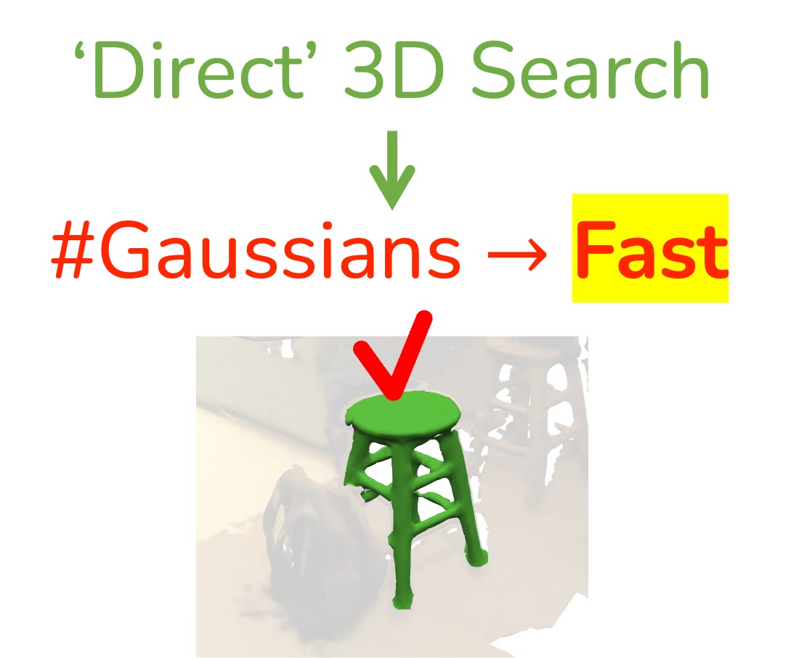
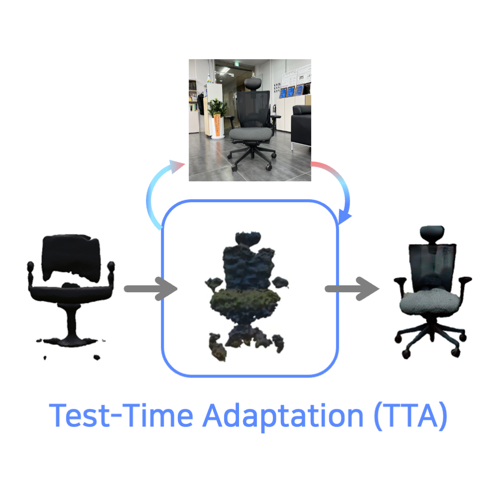
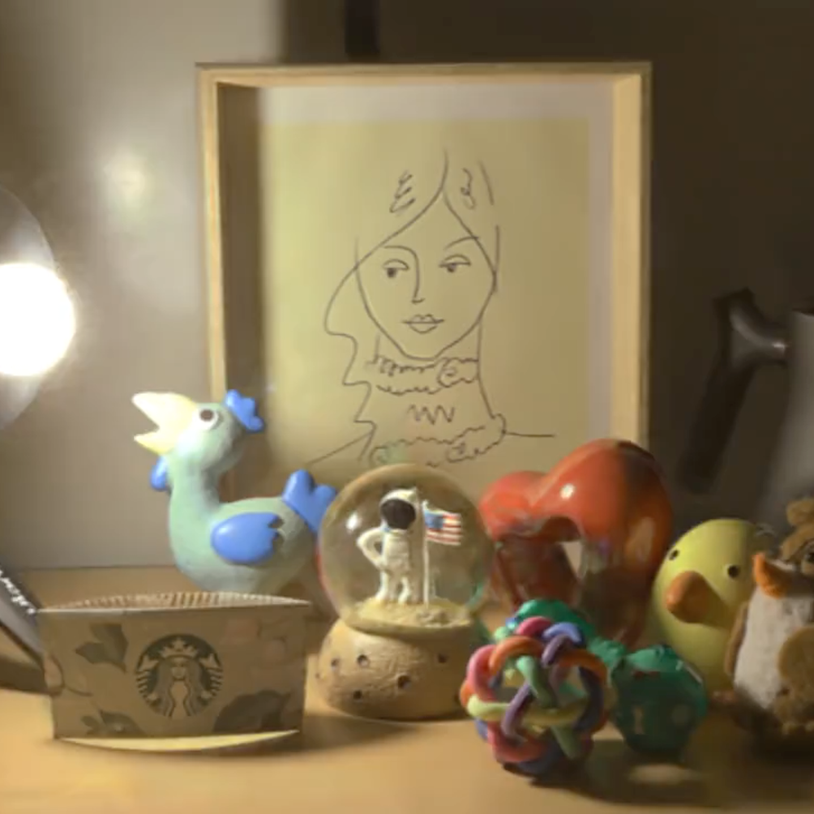

|
Kim Yu-Ji I am a Ph.D. student at POSTECH AI and advised by Prof. Tae-Hyun Oh of Advanced Machine Intelligence (AMI) Lab @ KAIST. I have worked on building realistic 3D worlds to enable holistic scene understanding. My research interests are on 3D reconstruction, generation, and understanding, but not limited to. ugkim@postech.ac.kr / CV / Scholar / LinkedIn / GitHub |
{kind=link}
News
|
Research |
|

|
Dr. Splat: Directly Referring 3D Gaussian Splatting via Direct Language Embedding Registration
Kim Jun-Seong,
GeonU Kim,
Kim Yu-Ji,
Yu-Chiang Frank Wang,
Jaesung Choe†,
Tae-Hyun Oh†
CVPR, 2025
Direct 3D-aware feature embedding with 3DGS. |
|

|
MeTTA: Single-View to 3D Textured Mesh Reconstruction with Test-Time Adaptation
Kim Yu-Ji,
Hyunwoo Ha,
Kim Youwang,
Jaeheung Surh,
Hyowon Ha†,
Tae-Hyun Oh†
BMVC, 2024
- Best Poster Award at BMVC 2024
Single view to 3D object reconstruction with realistic PBR textures. |

|
Scratching Visual Transformer's Back with Uniform Attention
Nam Hyeon-Woo,
Kim Yu-Ji,
Byeongho Heo,
Dongyoon Han,
Seong Joon Oh,
Tae-Hyun Oh
ICCV, 2023
Infusing dense attention splits the responsibility of interactions; the burden of interactions of self-attention is reduced. |
|

|
HDR-Plenoxels: Self-Calibrating High Dynamic Range Radiance Fields
Kim Jun-Seong*,
Kim Yu-Ji*,
Moon Ye-Bin,
Tae-Hyun Oh
ECCV, 2022
High dynamic range (HDR) radiance fields that learn a plenoptic function of 3D HDR radiance fields, geometry information, and varying camera settings inherent in 2D low dynamic range (LDR) images. |
Education
|
Honors & Awards
|
Invited Talks
|
Academic Services
|
|
Template adapted from Jon Barron's website. |